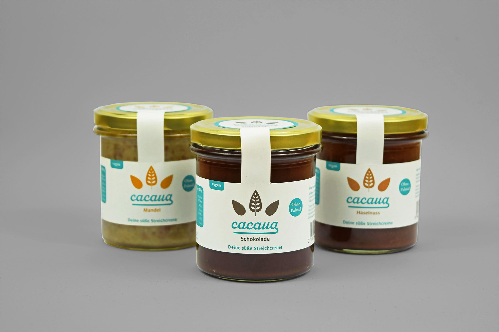
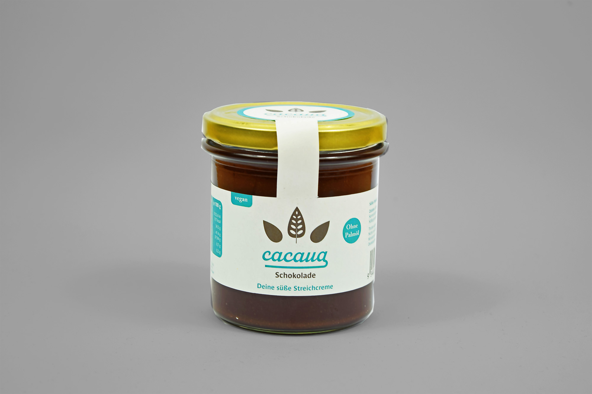

- Cacaua ist eine fiktive Marke, die süße und vegane Brotaufstriche anbietet. Für die Marke gestaltete ich das Logo und für die 500 ml fassenden Struzgläser Etiketten für die drei angebotenen Sorten.
- Fachgebiet: Corporate Design und Etikettendesign
- Entstehung: Private Einzelarbeit
- Datum: Juni 2020
- Der helle Türkiston als Corporate Colour ist für Nussnugatcremes unüblich und somit ein Hingucker im Supermarktregal. Die aus recyceltem Material hergestellten Nassleimetiketten sind aus Nachhaltigkeitsgründen nur spärlich bedruckt. Ein Frischesiegeletikett gewährleistet den Erstöffnungsschutz.

